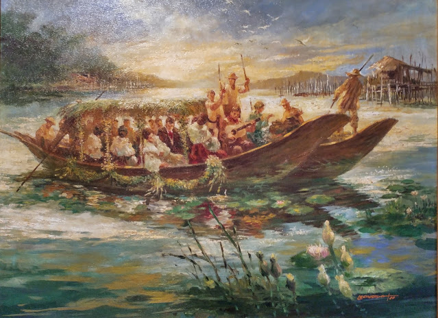

<html> 
    <head>
        <title> NOLI ME TANGERE: KABANTA 23</title>
        <link rel="stylesheet" href= "grid.css">
    </head>
</html>
 
<style>
    body {
        background-color: #b8936b;
    }
    h2 {
        background-color: #d7bfae;
    }

    p {
        background-color: #d3bfa6;
    }
</style>

<body>
    <h1> KAKABANATA 23: Ang Pangingisda </h1>
</body>

<div class= "container">
    <div class= "box">
        <h2> BUOD </h2>
        
        <p>Naganap nga ang piknik na hiniling ni Maria Clara sa kasintahan. Madaling araw pa lamang
            nagsimula na sa pamamangka sa lawa ang kanilang grupo patungo sa gubat. Kaagapay ni Maria Clara ang mga matatalik 
            niyang kaibigan na sina Iday, Victoria, Sinang, at Neneng  sa may dalampasigan. Madaling araw iyon at may ilang 
            kabataan, kadalagahan, at ilang matatandang babae na naglalakad papunta sa mga bangka na nakaparada sa dalampasigan 
            na may dala-dalang mga pagkain. Pinaghiwalay ng matatanda ang mga dalaga at binata ngunit gumawa ng paraan si Albino 
            upang magkatabi-tabi ang limang pares. Sinabi niya sa matatanda na kinakailangang takpan ng mga binata ang limang 
            butas sa bangka ng mga dalaga upang hindi ito lumubog at pumayag naman ang matatanda. Sa ganitong lagay, nagkalapit 
            ang mga pares na nagliligawan. Masaya ang lahat ng kasama sa naturang piknik maliban sa piloto ng bangka na walang 
            kibo, Elias ang kaniyang pangalan. Nagsalita lamang ito nang tanungin siya ni Maria Clara tungkol sa mga ibon sa 
            lugar tulad ng tagak, salay at tagabulag. Hiniling naman ng lahat na umawit si Maria Clara matapos hindi magpaunlak 
            ni Victoria dahil daw sa kaniyang pamamalat. Umawit ng isang awiting makabayan ang dalaga na nakapagbagbagdamdamin 
            sa mga nakikinig lalo na kina Crisostomo at sa Elias. Hinipan ni Albino ang tambuli at nanumbalik ang kasiyahan ng 
            pangkat. Nang nanghuhuli na ng isda para sa pananghalian, walang masalok na isda mula sa baklad. Natuklasan nilang 
            mayroon palang nakapasok na buwaya rito. Hinuli ni Elias ang buwaya ngunit nang tinatalian ito sa bibig, umigtad ito 
            at natangay ang piloto sa tubig. Tumalon si Crisostomo sa lawa at nailigtas niya si Elias sa tiyak na kamatayan.
            Pinasalamatan naman ni Elias si Ibarra sa pagsagip ng buhay niya. Pagkatapos ng lahat, nagpatuloy ang magkakaibigan 
            sa pangingisda at sa piknik.</p>
</div>
 
<div class= "box">
    <h2> REPLEKSYON </h2>
    <p> Ang natutunan ko sa kabanatang ito ay hindi tayo dapat magdalawang-isip sa pagtulong lalo na kung may maililigtas naman tayo 
        o may magandang patutunguhan ang tulong natin. </p>
</div>

<div class= "box"> 
    <h2> PAGLALARAWAN SA ISANG KARAKTER </h2>
    
    <p><center> Pilosopo Tasyo </center></p>
    <p>Si Pilosopo Tasyo ay nagsilbing tagapayo ni Don Rafael Ibarra at ng iba pang marurunong mula sa San Diego. Siya ay tinuturing 
        na baliw ng marami dahil sa kaniyang kakaibang pamamaraan ng pag-iisip.Siya ay kilala sa kaniyang mga matalinghaga at matalas 
        na opinyon na tumutugon sa tunay na nararanasan ng Pilipinas sa kamay ng mga Kasila. Meron din siyang dugong intsik. Siya ay 
        nakapag-aral ng pilosopiya sa kolehiyo ng San Jose ngunit dahil sa kagustuhan ng kanyang ina, iniwan niya ang kanyang pag-aaral. 
        Si Tasyo lamang ang natitirang kayamanan ng kanyang ina kung kaya't ayaw niya itong maging makalimot sa Panginoon. Nais ng kanyang 
        ina na siya'y magpari ngunit labag naman ito sa kanyang kagustuhan. </p>
</div>
    
